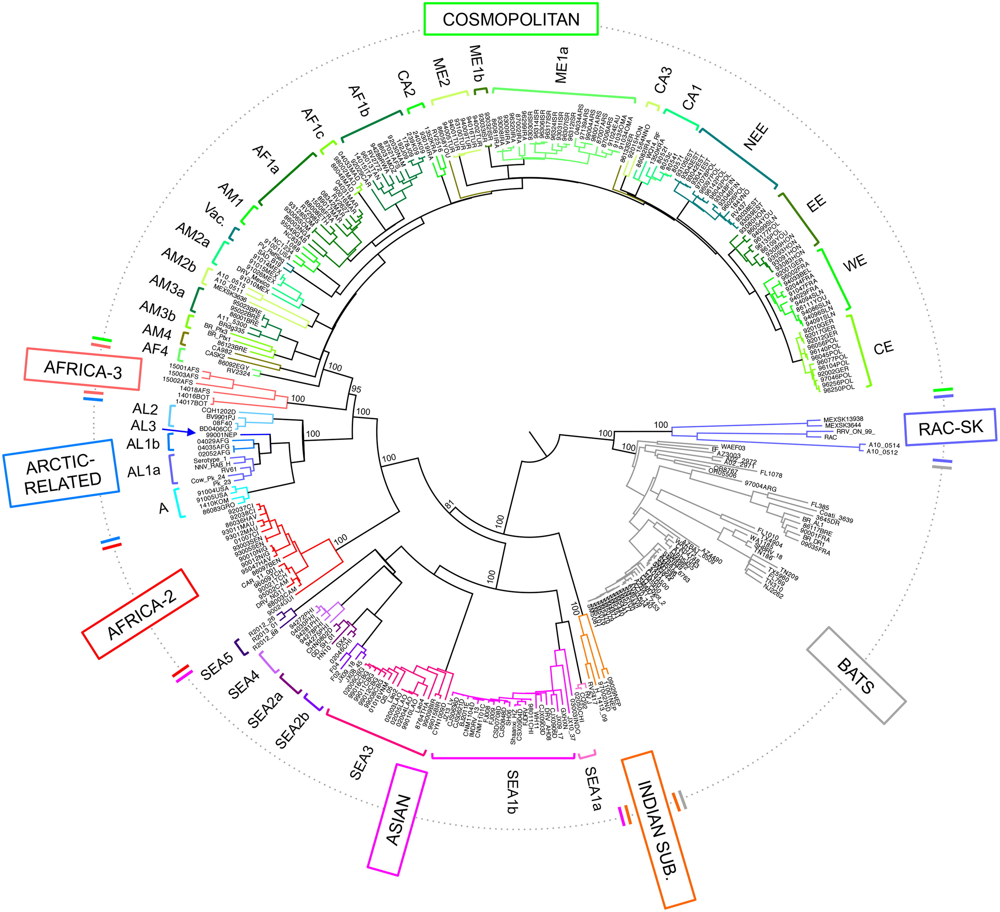

Lineage Dynamics
\(~\)
Study Overview
\(~\) \(~\)
This study contains 794 sequences from between NA and NA.This sequence data came from 1 different countries.
| Country | Number of Sequences |
|---|---|
| philippines | 794 |
Table 1. Numbers of sequences by area.
\(~\) \(~\)
Lineages Overview
\(~\) \(~\)
Several well-defined RABV clades circulate globally, within two major phylogenetic groups; bat-related and dog-related. The dog-related group is split into 6 different clades according to Troupin et al. (2016). These clades are: Africa 2, Africa 3, Cosmopolitan, Arctic, Asian and Indian. The majority of Nigerian sequences fall within the Africa 2 clade.

Figure 1. Global rabies clades. Phylogeny of all global rabies clades as defined by Troupin et al. (2016). taken from https://doi.org/10.1371/journal.ppat.1006041\(~\)
The MAD DOG (Method for Assignment, Definition and Designation Of Global lineages) tool is an updated lineage designation and assignment tool for rabies virus based on the dynamic nomenclature used for SARS-CoV-2 by Rambaut et al. (2020). This tool defines sequences beyond the clade and subclade level, allowing increased definition. Application of this tool can be used to generate detailed information to inform control efforts and monitor progress towards the elimination of rabies virus.
\(~\)
Details of the tool can be found at https://doi.org/10.5281/zenodo.5503916
\(~\)
For more information see: https://doi.org/10.1101/2021.10.13.464180
\(~\) \(~\) A total of 11 lineages have been detected in this study. 3 lineages are included here that have not been seen in this study, but are direct parents of lineages in this study, so are included for relevant evolutionary investigations.There are 8 existing lineages relevant to this study.
| lineage | country | year_first | year_last | n_seqs | parent |
|---|---|---|---|---|---|
| Africa_A1 | Chad, South Africa, Nigeria, Benin, Botswana, Guinea, - | 1986 | 2014 | 1 | Africa |
| Asian SEA4_A1 | Philippines, Japan, - | 1994 | 2020 | 264 | Asian_A1 |
| Asian SEA4_A1.1 | Philippines | 2012 | 2016 | 3 | Asian SEA4_A1 |
| Asian SEA4_A1.1.2 | Japan, Philippines | 2006 | 2019 | 258 | Asian SEA4_A1.1 |
| Asian SEA4_A1.2 | Philippines, Japan | 1994 | 2020 | 200 | Asian SEA4_A1 |
| Africa | - | - | - | 0 | RABV |
| Asian_A1 | Taiwan | 2012 | 2013 | 0 | Asian |
| Asian | - | - | - | 0 | RABV |
Table 2. Details of lineages relevant to this study. First and last years refer to the first and most recent years the lineage has been detected prior to this study.
There are 6 new lineages identified in this dataset.
| lineage | country | year_first | year_last | n_seqs | parent |
|---|---|---|---|---|---|
| Asian SEA4_C1.1.1 | c(“Japan”, “philippines”) | 2015 | 2022 | 11 | Asian SEA4_C1.1 |
| Asian SEA4_C1.1 | c(“Philippines”, “philippines”) | 2014 | 2021 | 7 | Asian SEA4_C1 |
| Asian SEA4_C1 | c(“Philippines”, “philippines”) | 2021 | 2022 | 4 | Asian SEA4_B1.1.1 |
| Asian SEA4_B1.1.1 | c(“Philippines”, “philippines”) | 2012 | 2022 | 22 | Asian SEA4_B1.1 |
| Asian SEA4_B1.1 | philippines | 2007 | 2019 | 5 | Asian SEA4_B1 |
| Asian SEA4_B1 | c(“Philippines”, “philippines”) | 1998 | 2022 | 9 | Asian SEA4_A1.1.2 |
Table 3. Details of new lineages identified in this study. First and last years refer to the first and most recent years the lineage has been detected.
Figure 2. Sunburst plot showing hierarchal relationships of lineages. Bar length corresponds to number of sequences. Plot is interactive. Hover over bars to see details, and click to zoom in on sections.
Lineage Changes Over Time
The sequences span NA years from NA to NA. The year with the greatest number of sequences is 2021 with 220 sequences.The most prevalent lineage is Asian SEA4_A1 with 264 sequences.
 \(~\)
\(~\)
Figure 4. Above: Number of sequences per year, with bars split by lineage. Below: Pie chart indicating proportions of lineages.
Areas to Investigate
There are 23 potentially emerging or undersampled lineages within the lineages relevant to this study. This means that these lineages have between 5 and 9 sequences; not enough to be a full lineage, but are significantly diverse from their relatives. With more sequencing and more time, these are likely to become new lineages. Be aware these include ALL emerging or undersampled lineages within the relevant lineages in your dataset; not just your data. This is to show there may be gaps in the data.
| lineage | tips | distance | country | year_first | year_last |
|---|---|---|---|---|---|
| Asian SEA4_A1.1.2_E1 | 9 | 0.0230758 | philippines | 2021 | 2022 |
| Asian SEA4_A1.1.2_E2 | 6 | 0.0227782 | philippines | 2022 | 2024 |
| Asian SEA4_A1.1.2_E3 | 5 | 0.0216160 | c(“philippines”, “Philippines”) | 2015 | 2017 |
| Asian SEA4_A1.1.2_E4 | 5 | 0.0224730 | c(“philippines”, “Philippines”) | 2015 | 2016 |
| Asian SEA4_A1.1.2_E5 | 5 | 0.0236948 | philippines | 2024 | 2025 |
| Asian SEA4_A1.1.2_E6 | 5 | 0.0243749 | philippines | 2021 | 2024 |
| Asian SEA4_A1.1.2_E7 | 5 | 0.0237341 | philippines | 2022 | 2024 |
| Asian SEA4_A1.1.2_E8 | 5 | 0.0241095 | philippines | 2022 | 2024 |
| Asian SEA4_A1.1.2_E9 | 5 | 0.0255918 | philippines | 2023 | 2025 |
| Asian SEA4_A1.1.2_E10 | 5 | 0.0214703 | philippines | 2019 | 2022 |
| Asian SEA4_A1.2_E1 | 5 | 0.0213701 | philippines | 2018 | 2022 |
| Asian SEA4_A1.2_E2 | 5 | 0.0239603 | philippines | 2022 | 2023 |
| Asian SEA4_A1.2_E3 | 5 | 0.0222951 | philippines | 2021 | 2022 |
| Asian SEA4_A1.2_E4 | 5 | 0.0222163 | philippines | 2020 | 2021 |
| Asian SEA4_A1.2_E5 | 5 | 0.0218038 | philippines | 2019 | 2023 |
| Asian SEA4_A1.2_E6 | 5 | 0.0217048 | philippines | 2021 | 2022 |
| Asian SEA4_A1.2_E7 | 7 | 0.0223027 | philippines | 2021 | 2022 |
| Asian SEA4_A1.2_E8 | 6 | 0.0209710 | c(“philippines”, “Philippines”) | 2018 | 2021 |
| Asian SEA4_A1.2_E9 | 6 | 0.0214998 | c(“philippines”, “Philippines”) | 2018 | 2019 |
| Asian SEA4_A1.2_E10 | 5 | 0.0207947 | philippines | 2021 | 2021 |
| Asian SEA4_A1.2_E11 | 5 | 0.0208482 | philippines | 2021 | 2021 |
| Asian SEA4_B1.1.1_E1 | 5 | 0.0206479 | c(“Philippines”, “philippines”) | 2019 | 2021 |
| Asian SEA4_C1.1.1_E1 | 7 | 0.0211909 | c(“Japan”, “philippines”) | 2020 | 2022 |
\(~\) Table 5. Details of potentially emerging or undersampled lineages relevant to this study. First and last years refer to the first and most recent years the lineage has been detected.
There are 18 singletons of interest detected. These reflect highly divergent sequences that could indicate sequencing errors, or the start of new lineages, especially in undersampled areas. Be aware these include ALL singletons of interest within the relevant lineages in your dataset; not just your data. This is to show there may be general gaps in the data.
| lineage | n_singletons | singleton_countries | singleton_years |
|---|---|---|---|
| Africa_A1 | 1 | - | 1987 |
| Africa-2_A1 | 7 | c(“Burkina Faso”, “-”, “Gambia”, “Guinea”) | c(“2007”, “1990”, “2008”, “1995”, “2018”, “1992”) |
| Africa-2_A1.1.1 | 1 | Mauritania | 1991 |
| Africa-2_A1.2 | 4 | - | c(“1992”, “1989”, “1990”, “1986”) |
| Africa-2_A1.2.1 | 2 | c(“Mauritania”, “Guinea”) | c(“2007”, “2018”) |
| Africa-2_A1.3 | 1 | - | 1988 |
| Asian_A1 | 2 | Taiwan | 2012 |
\(~\) Table 6. Summary of singletons of interest relevant to this study.
| ID | closest relative | lineage | year | country |
|---|---|---|---|---|
| EU827275 | EU853591 | Africa-2_A1 | 2007 | Burkina Faso |
| U22640 | U22641 | Africa-2_A1 | 1990 | - |
| U22636 | FJ392375 | Africa-2_A1.3 | 1988 | - |
| EU853591 | EU827275 | Africa-2_A1 | 2008 | Gambia |
| U22641 | U22644 | Africa-2_A1 | 1990 | - |
| U22487 | U22486 | Africa-2_A1 | 1995 | - |
| MK471247 | MK471248 | Africa-2_A1 | 2018 | Guinea |
| U22628 | AB573762 | Africa_A1 | 1987 | - |
| KF620487 | MN857171 | Asian_A1 | 2012 | Taiwan |
| KF620488 | KF620489 | Asian_A1 | 2012 | Taiwan |
| U22644 | U22641 | Africa-2_A1 | 1992 | - |
| EU853624 | EU853645 | Africa-2_A1.1.1 | 1991 | Mauritania |
| U22652 | FJ392373 | Africa-2_A1.2 | 1992 | - |
| U22639 | U22487 | Africa-2_A1.2 | 1989 | - |
| U22646 | U22644 | Africa-2_A1.2 | 1990 | - |
| U22486 | U22487 | Africa-2_A1.2 | 1986 | - |
| EU514581 | EU718735 | Africa-2_A1.2.1 | 2007 | Mauritania |
| MK471248 | MK471247 | Africa-2_A1.2.1 | 2018 | Guinea |
\(~\) Table 7. Details of individual singletons of interest relevant to this study.